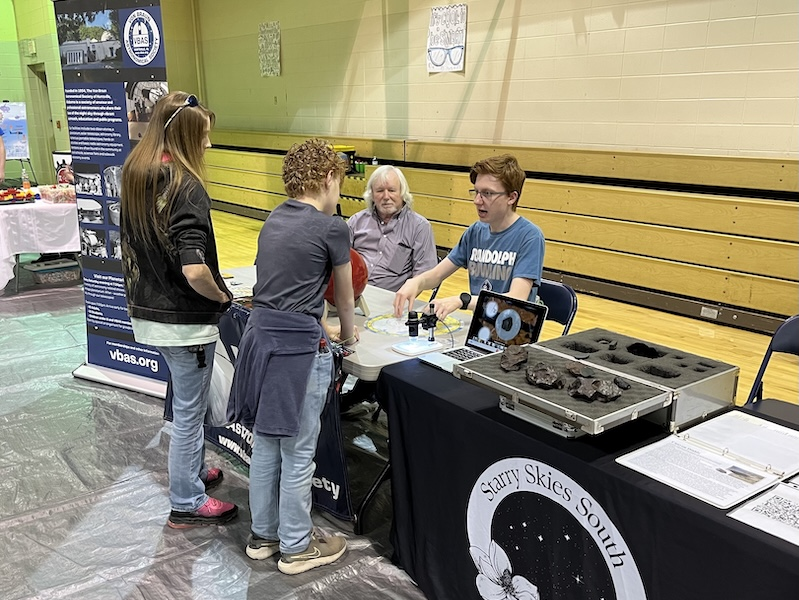
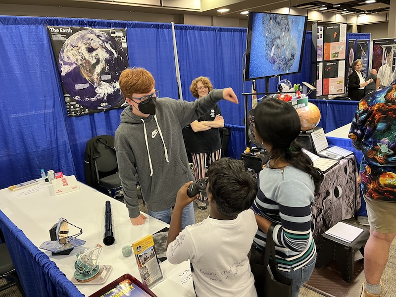
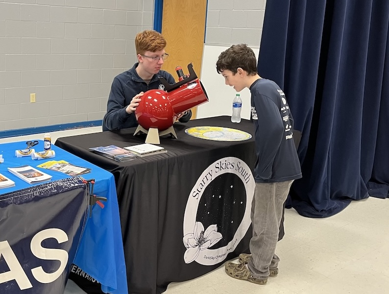
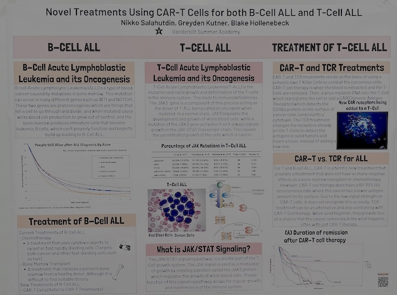
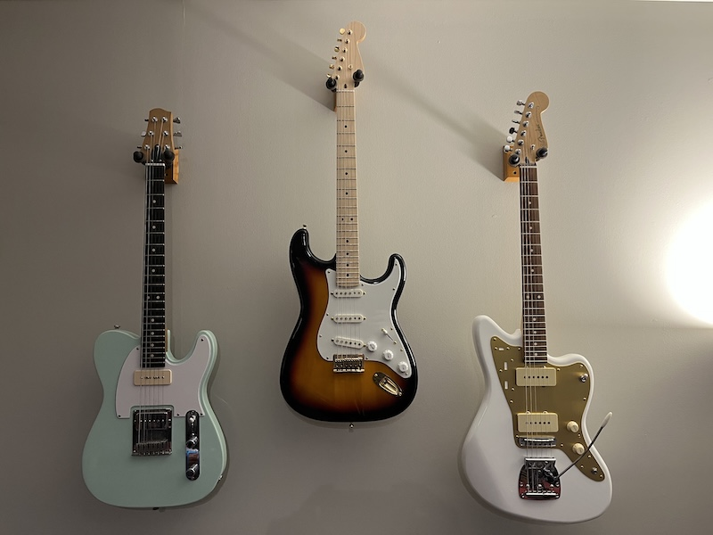
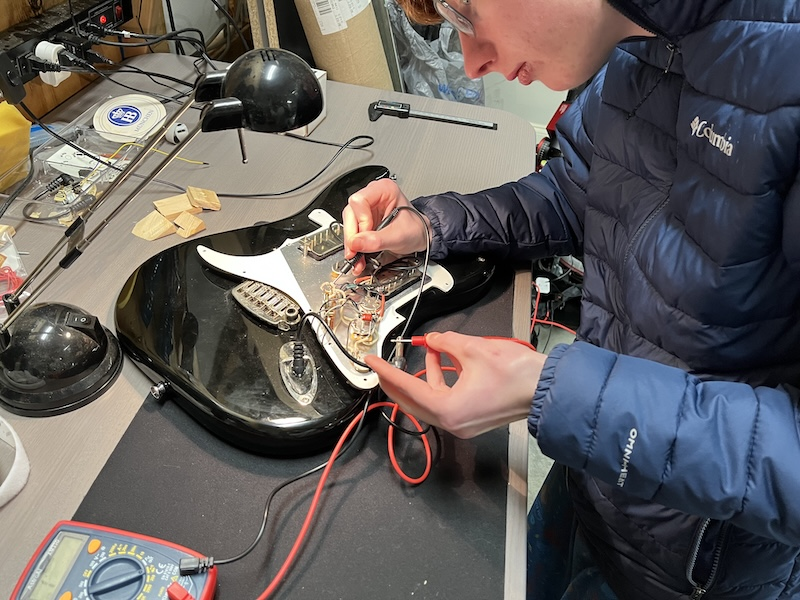
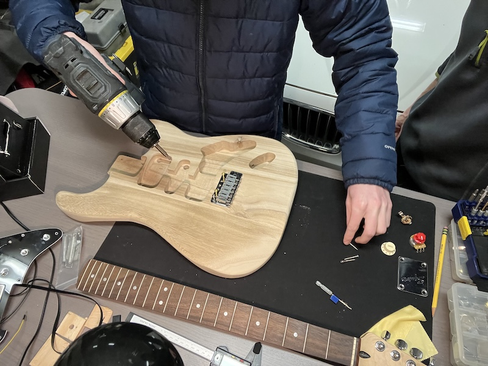
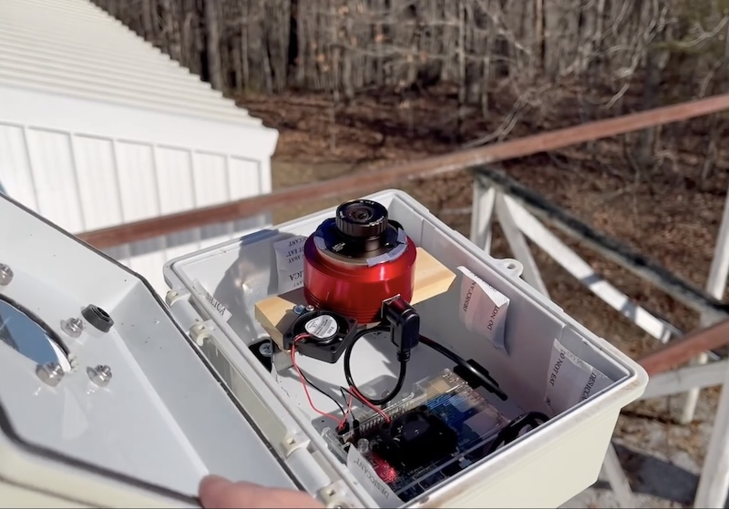
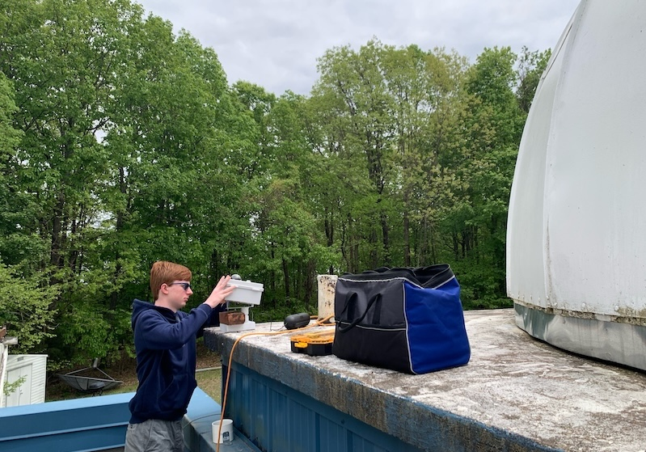
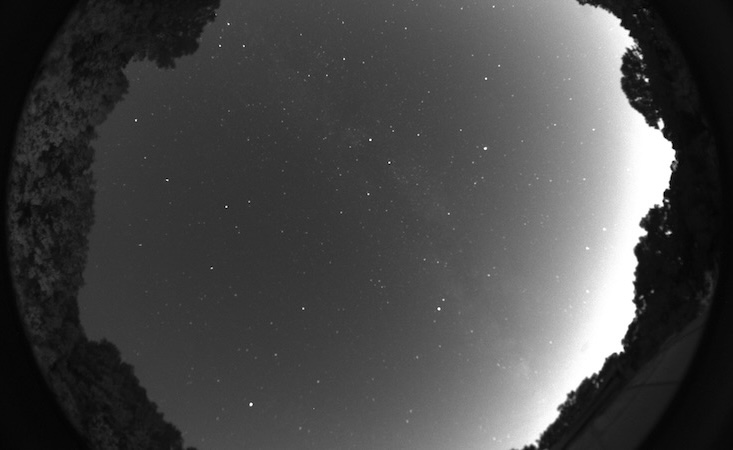

A curious student with a passion for science, technology, music, and service.
National Merit Semifinalist
AP Scholar with Distinction
All-State Jazz Band
(Guitar)
NASA Night Sky Network Outreach Award
J&J Science Award
($1,000 high school scholarship)
1st Place | Alabama Governor's App Challenge
(2024)
Experience
Software Engineering Intern
Leidos
In this paid internship, I built a Python-based interface that analyzes images to detect and classify objects. It was my first opportunity to apply my programming skills to a real project, and I loved every part of it. I learned how to design user interfaces, fix tricky bugs, and break problems down to find the root cause. This experience deepened my passion for computer science and showed me how much I enjoy tackling challenges with code. It made me excited to learn more about how computers work, take on bigger projects, and continue exploring this subject in college and beyond.
June 2024 - August 2024
Student Director
Von Braun Astronomical Society (VBAS)
I was elected by the VBAS Board of Directors to serve as its youth representative, advancing public engagement in astronomy and space science. I lead initiatives that broaden our audience and strengthen the long-term sustainability of the VBAS, which was founded 70 years ago by the rocket scientists responsible for NASA’s Apollo Program.
I help inspire more than 5,000 students each year by volunteering at outreach events and planetarium shows where I operate telescopes, share the VBAS meteorite collection, and help educate the public about space science. One Saturday each month, I work as a Planetarium Intern, operating planetarium and AV equipment.
I support hands-on astronomy outreach events where I bring telescopes and meteorites to communities, including rural schools with limited science resources, helping students experience space science firsthand.
Through this work, including hundreds of volunteer hours, I've earned several awards including:
I also create educational videos for the VBAS YouTube and Instagram accounts, like the one below. My videos have received more than 40,000 views and added hundreds of new followers, helping to attract new members, donors, and grant opportunities. This digital outreach played a key role in raising donations for a new $50,000 endowment fund in 2024.



July 2023 - PRESENT
Extracurriculars
Digital Raiders Computer Club
Founder/Lead
I founded a student-led computer programming club as a freshman, building it from a small interest group into a competitive team that meets weekly to learn, teach, and collaborate on coding projects. I led peers in preparing for hackathons and programming competitions, fostering both technical growth and a strong sense of camaraderie. Under my leadership, the club earned multiple city-wide and state-wide awards, while giving members hands-on experience with real-world programming, AI, and problem solving.
I auditioned for and was selected by state music educators as the sole jazz guitarist in the band in 10th, 11th, and 12th grades (alternate in 9th). As a band member, I attended a 3-day workshop each year and performed in front of an audience. I learned how to play with a large group of highly talented musicians and rehearse new songs with them in a short period of time. I also had the opportunity to perform several improvised solos, which is my favorite part of playing jazz.
2023-Present
Spotify
Artist
Original music recorded by me, playing all instruments. Primarily surf-rock inspired guitar music, with some Christmas songs in my personal style.
2023-Present
Varsity Bowling
Captain
As a member of my high school varsity bowling team since freshman year, being elected Team Captain my senior year has been one of my proudest experiences. After earning Teammate of the Year as an underclassman, I was excited to take on a leadership role and help create a positive team culture. I focus on inspiring my teammates, especially the underclassmen, by encouraging them during tough matches and celebrating their successes. I also make sure we have fun, for example by wearing a turkey hat when someone gets three strikes in a row. Leading the team has taught me how to support others, build community, and set an example through my actions.
2022-Present
Model UN
Delegate
As a Model United Nations (UN) member, I participate in activities that simulate the procedures and processes of the real UN. At the 2024 NAIMUN Conference in Washington DC, with 3,000+ attendees, my resolution was the only one that passed in my 100-person committee.
2023-Present
Auburn University Summer Science Institute
Scholar
I was one of 16 students selected for this tuition-free program for outstanding high schoolers. I studied with Auburn Science and Math research faculty for one week to explore topics including Computational Chemistry, Quantum Physics, and Human Anatomy.
2025
Vanderbilt Summer Academy
Attendee
I attended a one-week summer BioTech camp at Vanderbilt University. I worked on a research project about modern treatments for Acute Lymphoblastic Leukemia that utilize CAR-T cells.

2024
Rose-Hulman Institute of Technology: Operation Catapult
Attendee
I attended a two-week summer camp at Rose-Hulman Institute of Tech, where I collaborated with a team of students to build a robotic prosthetic hand that could be used to help people with disabilities. I was responsible for all programming of the prosthetic. We were awarded 1st place among all student projects.
2024
U.S. Advanced Cyber Academy
Trainee
I attended a one-week camp at the U.S. Space & Rocket Center, involving an intense curriculum in programming, data security, and engineering concepts applied to current and futuristic technologies.
2023
Projects
Guitar Building
Woodworking, Electronics, Painting
I design and build electric guitars from the ground up, combining woodworking, painting, and electronics into a single, functional instrument. I’ve built six complete guitars, including replicas of a 1954 Fender Stratocaster and a 1958 Fender Jazzmaster. I also build custom designs that incorporate unique elements such as humbucking pick-ups that can be coil split to achieve a wide range of tones and sounds.



Each build begins with shaping and finishing the body and neck, followed by winding my own pickups, selecting hardware, and assembling the electronics. I experiment with wiring configurations, capacitors, and pickup placement to dial in specific tones, and I troubleshoot issues like grounding problems, cold solder joints, and short circuits using multimeters and systematic testing. Through this process, I have developed strong hands-on skills in fabrication, circuit analysis, and precision craftsmanship.
Beyond construction, I use the guitars to perform and record music, which gives me feedback on how my design choices affect tone, sustain, and playability. Building my own instruments has deepened my understanding of electromagnetism, acoustics, and materials science, and has taught me how to break problems down into smaller steps.
Disney World Wait Times AI
Machine Learning, AI, TensorFlow
I created this machine learning application that predicts wait times for popular Disney World attractions using historical data and weather patterns.
By reapplying the AI techniques I learned at a hackathon, I was able to generate predicted wait times for rides like Space Mountain or Pirates of the Caribbean. I was excited to combine Disney with my love for coding because the magic of the theme parks has inspired my imagination ever since I was a kid. I knew theme park lines weren’t as important as other issues like medical research, but the problem was approachable, which made it the perfect playground for me to try my new skills.
I started by downloading ten years of historical ride data I found on TouringPlans.com. Then I programmed four different neural network algorithms and trained them on that data to create four unique predictive models. To improve accuracy, I added data about weather, park hours, and holidays. Finally, I built a webpage that graphed the predictions. When I got the chance to test my program’s predictions on a real Disney World trip, I found they were accurate enough to help plan my family’s schedule and avoid the longest wait times. We all had fun checking the predictions to see how they compared with the real world.
In this game, players control a constantly moving lightcycle while avoiding the trails the bikes create as well as various obstacles randomly generated on the screen.
I created this video game after I watched a similar game depicted in the TRON movies and wanted to find one online to play with my friends. After being unable to find one, I decided to create my own instead.
I designed, built, and installed an all-sky camera system to support monitoring of night sky conditions and meteor strikes for the Von Braun Astronomical Society (VBAS).


The build integrates an astrophotography camera with a wide-angle lens, weather-resistant enclosure, and automated capture software to operate unattended overnight. I installed and configured open-source Allsky software to handle image capture, processing, stacking, and web publishing. I customized configuration files and scripts to match local conditions, camera hardware, and VBAS outreach needs, including exposure tuning and scheduling. To support our outreach efforts, I enabled public access to live and archived sky images, expanding VBAS’s ability to engage the community beyond in-person observing nights.

Video about the camera system.
Website with live images.
Awards & Honors
National Merit Semifinalist
AP Scholar with Distinction
J&J Science Award
$1,000 high school scholarship awarded for excellence in science, the arts, mentorship and outreach within the community.
🎸
All-State Jazz Band
Auditioned and selected to the Alabama All-State Jazz Band as sole guitar player in 2024 and 2025 (alternate in 2023).
🔭
NASA Night Sky Network Outreach Award (2023)
Recognizes individuals who promote astronomy in their community via social media and events.
🔭
Stellar Outreach Award (2023)
The Astronomical League, a national non-profit, recognizes individuals who promote astronomy through outreach and events.
1st Place | Alabama Governor's App Challenge (2024)
State-wide computer programming competition. I built a mobile app to educate users about state historic markers as part of a game.
1st Place | NASA Space Apps Hackathon (2022)
International programming competition where my team built a Mars expedition game and won the high school division in our city.
College Board National Recognition Award
Top 10% of my high school's test takers on the PSAT.
National Spanish Exam, Gold Medal
Scored above the 95th percentile.
University of Alabama Capstone Leadership (2023)
Selected as one of 150 Alabama 10th graders demonstrating leadership and service achievements.
2nd Place | HudsonAlpha Tech Challenge (2024)
Programming competition focused on biology and biotech. My team created AI models to generate DNA sequences for scientific studies.
📖
National Honor Society
📖
Mu Alpha Theta
National organization that honors students who excel in mathematics based on academic performance and achievements.
📖
Presidential Volunteer Service Award
Completed 100+ hours of community service at the Manna House food bank and the VBAS.